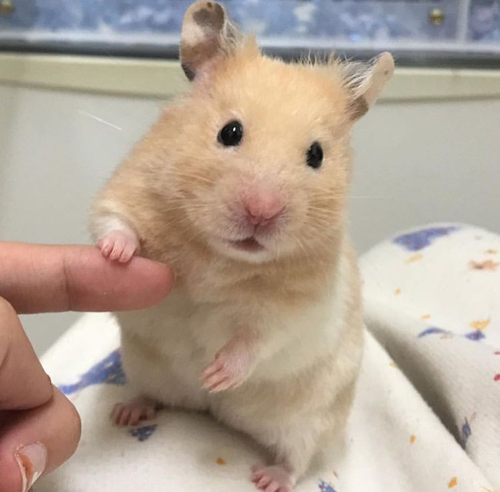
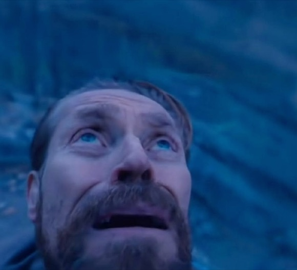
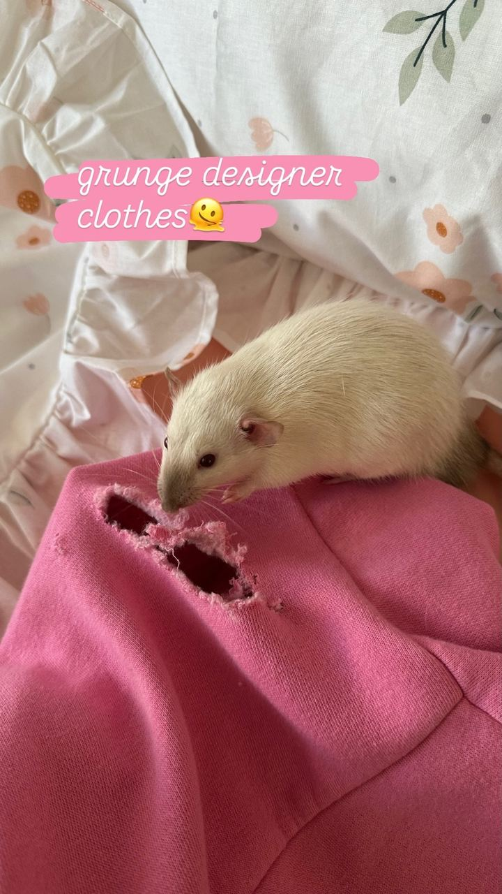

Кладакса1/4 табл.
Кладакса1/4 табл. Очні крапліпо 1 краплі
Очні крапліпо 1 крапліНе пропустіть жодної дози
Налаштуйте курс лікування один раз, і нагадування прийдуть вчасно. Позначайте прийом одним дотиком. Так само працюють нагадування про візити, зважування та чистку клітки.


 вашого гризуна
вашого гризунаНагадування про ліки, облік симптомів, ваги й візитів до ветеринара. Уся історія лікування завжди під рукою, навіть якщо у вас кілька улюбленців.
Блог про пацюків, з якого все почалося, читають 6 000+ людей в Instagram і TikTok
Якщо хоч одна з цих думок вам знайома, Roddi Health зробить ваше життя спокійнішим.
Я точно дав ліки? Чи то було вчора…

А коли був останній огляд у лікаря?
Де ж ця клята нотатка з призначеннями?
Знову прогавила антибіотик

Чотири речі, які забирають найбільше нервів, зібрані в одному місці.
Налаштуйте курс лікування один раз, і нагадування прийдуть вчасно. Позначайте прийом одним дотиком. Так само працюють нагадування про візити, зважування та чистку клітки.
Записуйте симптоми й вагу, а додаток покаже динаміку на графіку. Так легше помітити зміни вчасно.
Візити, призначення, поточне й минуле лікування, аналізи в одному профілі улюбленця. На прийомі не доведеться згадувати.
Нотатки, особливості здоров’я та швидкий пошук: знайдете потрібне за секунди, навіть якщо у вас кілька гризунів.
Запишіться на ранній доступ: спробуєте додаток до публічного запуску й вплинете на його функції.
Безкоштовно під час бети. Лише новини про запуск, без спаму. Відписатися можна будь-коли.
Для власників щурів, хом’яків, морських свинок, кроликів, шиншил, дегу, мишей та інших маленьких улюбленців, яким потрібен уважний догляд за здоров’ям.

Коли в моєму житті з’явилися двоє пацюків, я створила Instagram-блог, щоб ділитися їхніми пригодами. Разом із радістю прийшли й турботи про здоров’я: візити до ветеринара, ліки, симптоми, зміни ваги. Усе це я постійно записувала або тримала в голові.
«Тому я роблю додаток, який потрібен мені самій, разом з іншими власниками гризунів.»
Як змінюється турбота про здоров’я улюбленця, коли все важливе зібрано в одному місці.
Ми працюємо над першою версією. Усім, хто залишить email, напишемо першими.
Під час бети Roddi Health безкоштовний.
Ні. Roddi Health допомагає вести історію здоров’я й не пропускати лікування, але не замінює консультацію ветеринара.
Поки що ми зберігаємо лише ваш email і відповіді короткого опитування, якщо ви їх залишили, і використовуємо їх тільки для новин про запуск. Докладніше в Політиці конфіденційності.
Для щурів, хом’яків, морських свинок, кроликів, шиншил, дегу, мишей та інших маленьких улюбленців. Не знайшли свого — напишіть нам.
Надсилаємо лише новини про запуск і запрошення до раннього доступу. Без спаму, відписатися можна будь-коли.